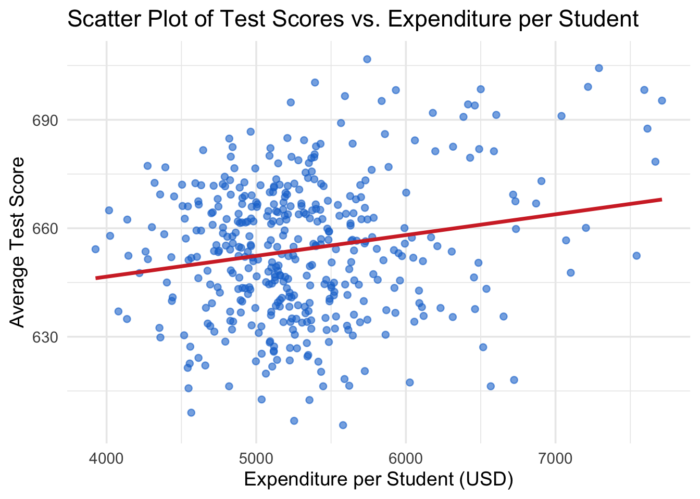
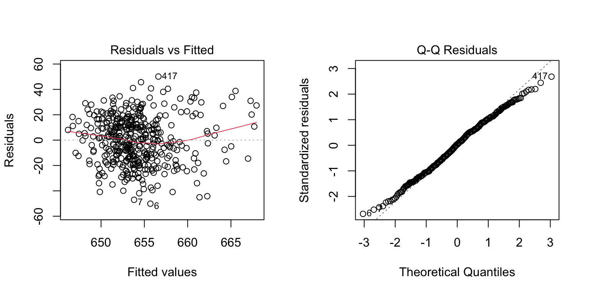

In this session, we will use the same CASchools dataset from the previous session and implement a simple linear regression model to explore a question of interest:
Research Question
Does expenditure per student affect student performance
in elementary school education?
read and math are average reading and math test scores for each district
In the last session, we show that these two variables are highly correlated (r=0.92)
We construct an average test score as the average of the test score for reading and the score of the math test.
# compute TestScore and append it to CASchoolscas <- cas %>%mutate(TestScore = (read + math) /2)
2 Descriptive Statistics
Refer to the previous session for detailed summary statistics and visualizations.
A quick preview
v <-setdiff(names(cas), c("district", "school", "county", "grades"))stargazer(as.data.frame(cas[v]), type="html", digits=2)
Statistic
N
Mean
St. Dev.
Min
Max
students
420
2,628.79
3,913.10
81
27,176
teachers
420
129.07
187.91
4.85
1,429.00
calworks
420
13.25
11.45
0.00
78.99
lunch
420
44.71
27.12
0.00
100.00
computer
420
303.38
441.34
0
3,324
expenditure
420
5,312.41
633.94
3,926.07
7,711.51
income
420
15.32
7.23
5.34
55.33
english
420
15.77
18.29
0.00
85.54
read
420
654.97
20.11
604.50
704.00
math
420
653.34
18.75
605.40
709.50
TestScore
420
654.16
19.05
605.55
706.75
3 Scatter Plot
Hypothesis: Higher spending per student leads to better test scores.
ggplot(cas, aes(x = expenditure, y = TestScore)) +geom_point(alpha =0.6, color ="#1976d2") +geom_smooth(method ="lm", color ="#d32f2f", se =FALSE) +labs(title ="Scatter Plot of Test Scores vs. Expenditure per Student",x ="Expenditure per Student (USD)",y ="Average Test Score" ) +theme_minimal(base_size =14)

There seems to be a positive relationship between expenditure per student and average test scores. Also note that the points are dispersed, indicating that other factors may also influence test scores. We will further explore this using multiple regression in future sessions.
For now, we will focus on a simple linear regression model with only one independent variable: expenditure per student.
Let’s calculate the correlation coefficient between expenditure and test scores.
with(cas, cor.test(expenditure, TestScore))
Pearson's product-moment correlation
data: expenditure and TestScore
t = 3.9841, df = 418, p-value = 7.989e-05
alternative hypothesis: true correlation is not equal to 0
95 percent confidence interval:
0.09736861 0.28180139
sample estimates:
cor
0.1912728
What does the correlation coefficient tell us? Is it statistically significant? Justify your answer.
The reported correlation coefficient is 0.19 between expenditure and TestScore.
This is a positive but weak correlation: higher expenditures are associated with higher test scores, but the relationship is not very strong.
The p-value = 7.989e-05, which is far below common significance levels (0.05, 0.01, or even 0.001).
This means we reject the null hypothesis that the true correlation is zero. The result is statistically significant.
4 Simple Linear Regression
4.1 Model Specification
We will fit a simple linear regression model to examine the relationship between expenditure per student and average test scores.
Equation 1 is the linear regression model with a single independent variable.
Where:
Key Components of the Linear Regression Model
\(\text{TestScore}_i\) in the Left Hand Side (LHS) is the dependent variable (response variable). \(i\) indexes different school districts.
\(\text{expenditure}_i\) in the Right Hand Side (RHS) is the independent variable (explanatory variable or regressor).
\(\beta_0\) and \(\beta_1\) are known as the parameters (coefficients) of the model.
\(\beta_0\) is the intercept, representing the expected value of TestScore when expenditure is zero.
\(\beta_1\) is the slope coefficient, representing the change in TestScore for a one dollar increase in expenditure.
\(\varepsilon_i\) is the error term, capturing all other factors affecting not included in the model, e.g, teacher quality, school facilities, parental involvement, etc.
\(\beta_1\) is the slope coefficient, which measures the change in the dependent variable \(Y\) associated with a one-unit increase in the independent variable \(X.\)
\(\beta_0\) is the intercept, which is the expected value of \(Y\) when \(X=0;\) it is the point at which the population regression line intersects the Y axis.
📌 In some econometric applications, the intercept has a meaningful economic interpretation. In other applications, the intercept has no real-world meaning; for example, when \(X\) is the expenditure per student, strictly speaking the intercept is the expected value of test scores when there is no expenditure, which might be unrealistic.
When the real-world meaning of the intercept is nonsensical, it is best to think of it simply as the coefficient that determines the level of the regression line.
4.2 Estimating the Coefficients of the Linear Regression Model
Based on the scatter plot and the correlation analysis, we expect a positive relationship between expenditure and test scores. We will use the Ordinary Least Squares (OLS) method to estimate the coefficients of the linear regression model.
To run this regression, we use the lm() function in R.
# Fit the linear regression modelmodel <-lm(TestScore ~ expenditure, data = cas)summary(model)
Call:
lm(formula = TestScore ~ expenditure, data = cas)
Residuals:
Min 1Q Median 3Q Max
-50.146 -14.206 0.689 13.513 50.127
Coefficients:
Estimate Std. Error t value Pr(>|t|)
(Intercept) 6.236e+02 7.720e+00 80.783 < 2e-16 ***
expenditure 5.749e-03 1.443e-03 3.984 7.99e-05 ***
---
Signif. codes: 0 '***' 0.001 '**' 0.01 '*' 0.05 '.' 0.1 ' ' 1
Residual standard error: 18.72 on 418 degrees of freedom
Multiple R-squared: 0.03659, Adjusted R-squared: 0.03428
F-statistic: 15.87 on 1 and 418 DF, p-value: 7.989e-05
4.3 Interpretation of the output
A. Model Specification and Fitted Values
The regression estimates the effect of expenditure (per student, in USD) on test scores (combined reading and math).
From Theory to Practice:
We started with the theoretical model: \[
\text{TestScore}_i = \beta_0 + \beta_1 \times \text{expenditure}_i + \varepsilon_i
\]
The hat symbol (\(\widehat{\text{TestScore}}\)) indicates these are predicted values based on our sample data. Notice that we no longer have the error terms (\(\varepsilon_i\)) because this equation gives us the predicted values from the regression line.
Understanding Residuals:
Since our model can’t perfectly predict every observation, we need to measure how far off our predictions are from reality:
Residuals represent the difference between actual and predicted values - essentially, they capture what our model couldn’t explain. In the original theoretical model, these correspond to the error terms (\(\varepsilon_i\)) that we estimated.
B. Coefficients
Intercept (623.6): When expenditure = 0, the predicted test score is about 623.6. While not meaningful in practice (since expenditure cannot realistically be zero), it serves as the baseline of the regression line.
Expenditure (0.00575): For every one-dollar increase in expenditure per student, the average test score is predicted to increase by 0.0057 points. Put differently: a $1,000 increase in expenditure is associated with a 5.75-point increase in test scores.
C. Statistical Significance
For the slope coefficient (\(\beta_1\)):
The t-value = 3.984 and p-value = 7.99e-05, which is well below 0.001.
This indicates that expenditure has a statistically significant positive effect on test scores.
D. Model Fit
R-squared = 0.0366 (about 3.7%).
This means expenditure explains only a small portion of the variation in test scores.
Many other factors (teacher quality, socio-economic background, school resources, etc.) likely play a larger role.
F-statistic = 15.87 with a p-value of 7.99e-05.
This tests the null hypothesis that all regression coefficients are equal to zero (no effect).
The low p-value indicates we reject the null hypothesis, confirming that the model has some explanatory power.
E. Residuals
The investigation of residuals requires diagnostic test which checks the assumptions of linear regression (e.g., homoscedasticity, normality of errors).
We will cover them in future sessions.
Here we provide a brief overview.

The first plot is “Residuals vs Fitted” plot.
The residuals appear reasonably balanced around zero, though the spread suggests substantial unexplained variation.
The spread of residuals seems to increase slightly with fitted values, indicating potential heteroskedasticity (non-constant variance of errors). This suggests that the assumption of homoskedasticity may be violated, which could affect the reliability of our coefficient estimates and standard errors.
The second plot is the normal Q-Q plot, which assesses whether the residuals are normally distributed.
The points generally follow the reference line, suggesting that the residuals are approximately normally distributed, although there shows thin tails.
This indicates that there are few extreme residuals. The model predictions don’t have large outliers.
From the summary output:
The residual standard error = 18.72, which is the average size of prediction errors (in test score points).
✅ Summary Interpretation:
The regression analysis shows a statistically significant positive relationship between school expenditure and test scores. On average, an additional \$1,000 in per-student expenditure is associated with an increase of about 5.75 points in test scores. However, the explanatory power of the model is low (R² ≈ 3.7%), indicating that expenditure alone explains only a small fraction of the variation in test scores. This suggests that while spending matters, many other factors also influence student performance.
To gain a more comprehensive understanding of the factors affecting student achievement, future analyses should employ multiple regression models that incorporate additional explanatory variables such as student demographics, teacher qualifications, and school characteristics. We will cover multiple regression in subsequent sessions.
5 Report by Stargazer
stargazer produces well-formatted regression tables that can be easily included in reports or publications.